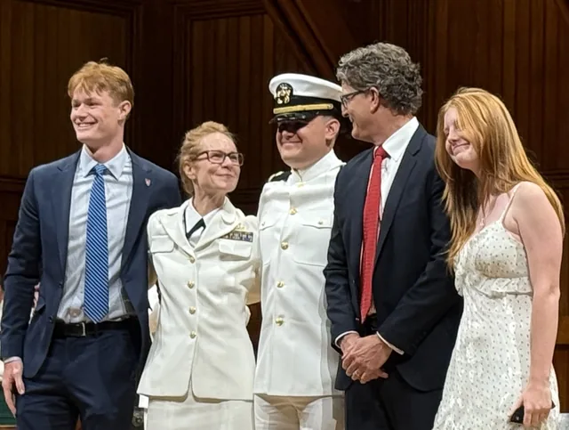

An important part of my education
I participated in the BU-MIT NROTC Consortium while studying at Harvard, including training in Great Lakes during summer 2024 and San Diego during summer 2025. I left the program in spring 2026 and am no longer a midshipman.
The experience was demanding mentally and physically, and it became an important source of balance alongside my academic work.
What stayed with me
NROTC changed how I think about preparation, responsibility, and working with a team. I have carried those lessons into the Harvard Undergraduate Robotics Club, where clear roles and trust in other people matter as much as an individual technical contribution.
It also helped me build habits around exercise and consistency that I have kept after leaving the program.
A continuing personal connection
I remain close to people I trained with, and the Navy is part of my family as well. Leaving NROTC did not remove its influence on me. It remains an important part of my background and of how I approach both work and the rest of my life.



{kind=link}